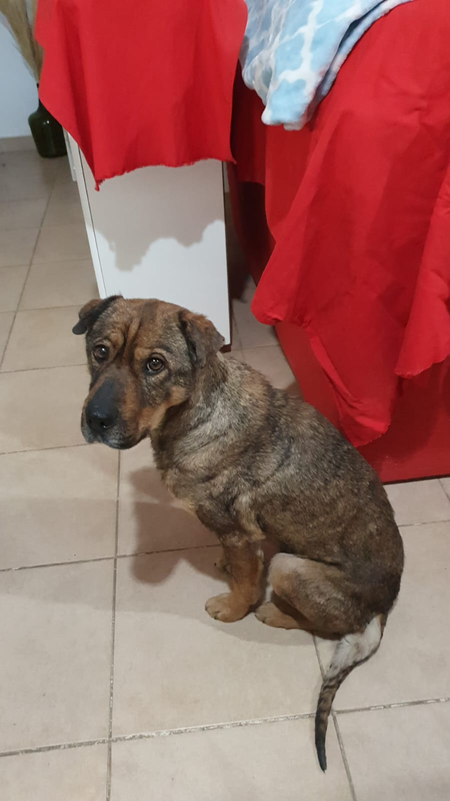
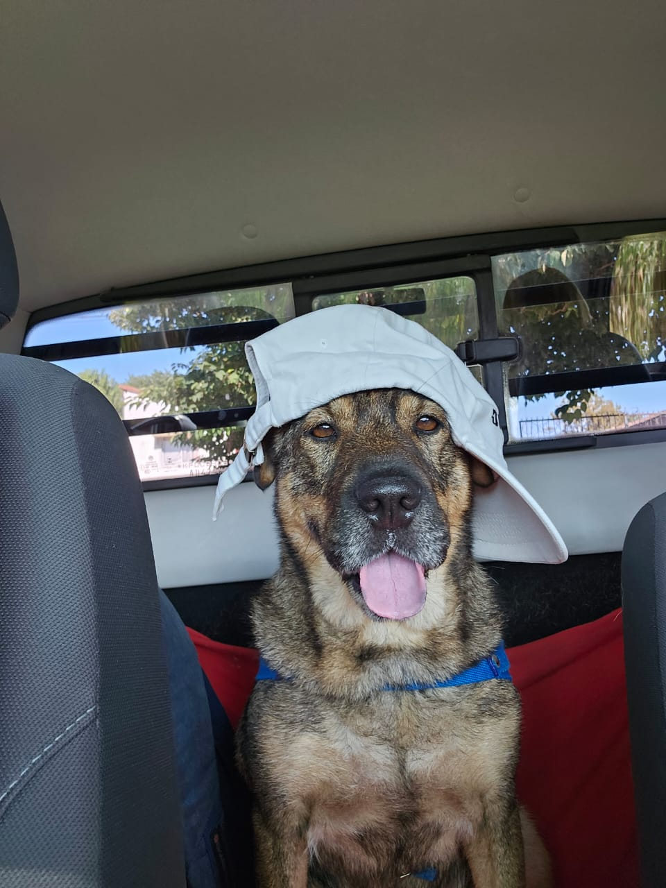

Galería de fotos.
| Primer dia de mi nueva vida. |
Primera foto. |
Mi primer cucha. |
 |
 |
 |
| Recuperandome. |
Empoderada y loca. |
|  |
 |
Mi nueva vida.
Yo lo unico que queria hacer era dormir, temblaba todo el tiempo porque estaba muy nerviosa,
pero como no tenia
fuerzas no luchaba, miraba con dulzura en la espera de ver que me hacian. Pero al fin comprendi que lo
que queria esta señora era ayudarme a vivir. Asi que la quiero y le pido siempre que me acaricie o que se quede
a
mi lado. Y se que ella me quiere, porque me da de comer jijiji.
Vacunas
- Vacuna de la rabia
- Primera dosis de quintuple